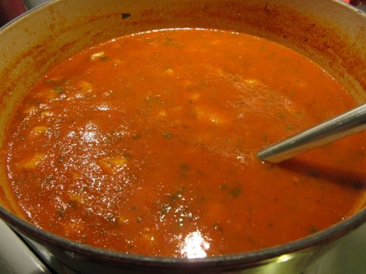

Spicy Potato Soup
Makes 6-8 servings

Photo: portmanteaus (CC BY 2.0)
A hearty soup of browned ground beef and cubed potatoes simmered in tomato sauce and water with onion and hot pepper sauce.
Directions
- In a Dutch oven or large kettle, brown ground beef. Drain. Add potatoes, onion and tomato sauce. Stir in water, salt, pepper and hot pepper sauce; bring to a boil. Reduce heat and simmer for 1 hour or until potatoes are tender and the soup thickened.
- In a Dutch oven or large kettle, brown the 1 lb ground beef. Drain.
- Add the 4 cups cubed potatoes, the chopped onion, and the 2 cans tomato sauce.
- Stir in the 4 cups water, 2 tsp salt, 1 1/2 tsp pepper, and 1/2 tsp hot pepper sauce (or more); bring to a boil.
- Reduce heat and simmer for 1 hour, or until the potatoes are tender and the soup has thickened. Makes 6-8 servings.
Goes well with
https://baron-3dl.github.io/normans-kitchen/recipe/spicy-potato-soup.html